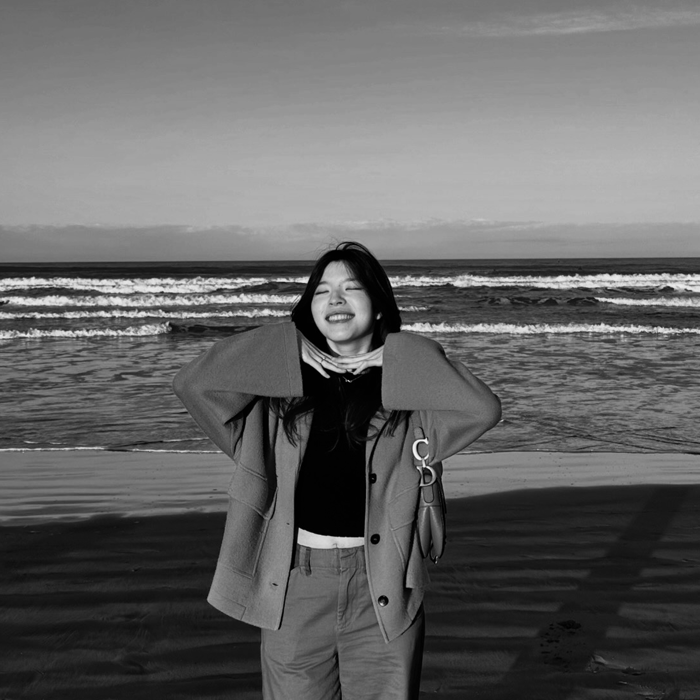
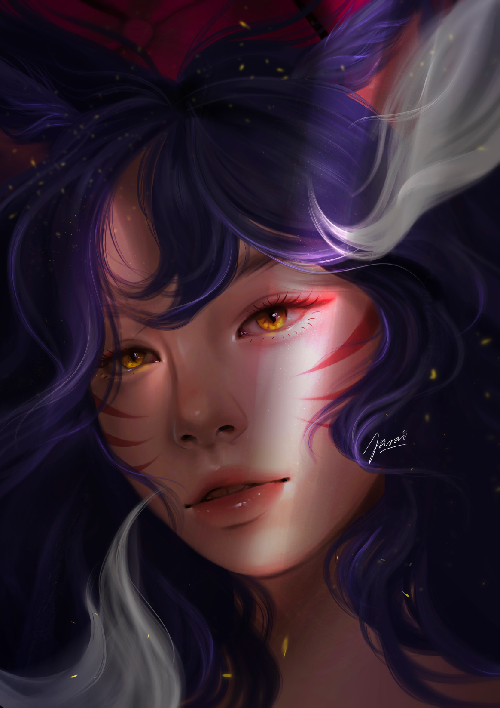

[ scroll for more ]

[ 01 ]
Born and raised in Bangkok, Thailand, I grew up around a very diverse mix of people and perspectives. I’ve always been into art in some form. Drawing, games, anything that just looked good and felt good, even if I didn’t really know why at the time.
[ 02 ]
I moved to the UK to study Economics at the University of Warwick, and ended up staying to explore my own career. That shift changed my environment and pace, and introduced a different way of thinking about what I wanted to do.
[ 03 ]
I now work across finance and tech as a finance strategy consultant in London, helping CFOs reimagine their finance functions.
Most of my time is spent working with data, building internal tools as a UX and front-end engineer, and figuring out how things actually get used.

[ 04 ]
Outside of that, I still spend a lot of time around art. I draw (all pieces on here are my illustrations!), play plenty of video games, and pay a bit too much attention to how things look and feel — whether that’s in a game, a UI, or something small that’s well put together.
[ 05 ]
This site is my creative outlet. It’s where I can experiment, try things out, and build in a way that feels more personal, without overthinking it too much. It also gives me a space to bring art, design, and the technical side of things together in a way that feels true to myself.
see the gallery